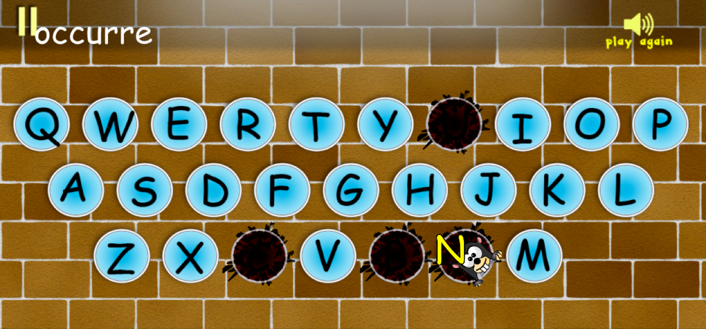

Get 'em Moles
December 2013
Get 'em Moles! is a single-player educational game inspired by the classic arcade game Whac-A-Mole. Primarily designed for touchscreen devices, Get 'em Moles! gamifies the traditional dictation exercise and aims to teach English spelling and pronunciation through engaging game play. We designed and developed this game using the Unity 3D game engine.

Game Play

The game involves typing the right spelling of each word after it is spoken by the in-game voice and gaining points as reward. Hints are given by Murphy the mole in the form of bombs planted by Murphy under the letters of the on-screen keyboard. The main game screen comprises of a stylized QWERTY keyboard, score meter, pause/play button, a "Play Again" speaker button to listen to the pronunciation of a word again, and a word text area that displays letters of the word already typed by the player. If the player hits the correct letter, the letter turns green, a pleasant chime sound is played and the letter appears in the word text area. If the player does not hit any letter within a fixed period of time, some letters on the keyboard glow red and small bombs appear near them. One of these letters is correct and the rest are decoys. This provides the player a choice of possible answers for the next letter as a hint. If the player hits the correct letter now, the player gets lesser points as compared to hitting correctly without the hint. If the player does not hit any letter, the bomb explodes after a fixed period of time, revealing Murphy the Mole under the correct letter. At any stage, a wrong hit causes a buzzer to sound and the hit letter turns red to indicate that it is the wrong letter.
Game Elements Supporting Learning
Following features support learning:
1. The pronunciation of the word can be played multiple times using the "Play Again" button.
2. Every correct hit is supported by the letter turning green and the pleasant sound of a chime. This is supplemented by the letter being spoken by the in-game voice and displayed in the word text area on the top of the screen for further cognitive reinforcement.
3. Every incorrect hit is supported by the letter turning red and the sound of a buzzer. The correct letter is displayed as a giveaway hint to immediately learn after making the mistake.
4. A multiple-choice hint and eventually a giveaway hint revealing the correct letter is provided when the played doesn't hit any letter within a given delay, presumably since the player doesn't know the correct letter. This is to enable the player to learn and progress further.
Play Testing and Results
We selected ten 5th and 6th grade students from a school in Bangalore, India and conducted a preliminary play-testing session with them. The objective of the session was to see whether the students learn the right spellings of words by playing the game.
We first conducted a pre-test, asking the students to write, on a separate sheet of paper, the spellings of five words dictated to them. After collecting their papers we asked each student to play the game, which featured the superset of the words from the pre-test, for about 15 minutes each on a touchscreen device. After playing the game, the students took a post-test, in which the same five words were dictated to them and they had to write down the spellings of the words on a separate sheet of paper. We then evaluated both sets of test papers and looked for students who misspelled a word before playing the game and spelled the word correctly after playing the game. We found that four students belonged to this category. Additionally, we observed that no student misspelled a word both before and after playing the game.